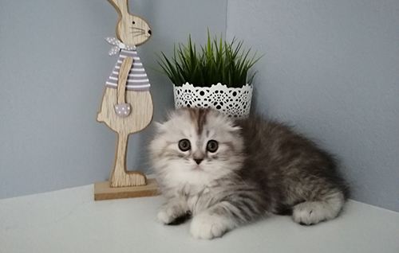
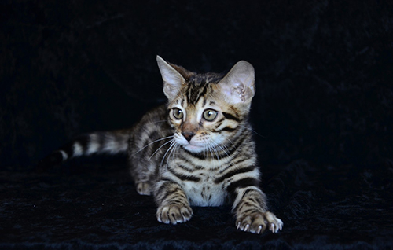
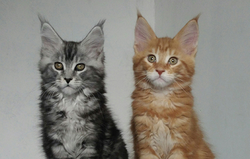
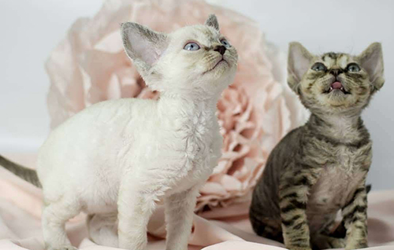
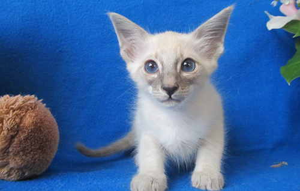

Британская короткошерстная кошка — идеальный питомец для тех, кто любит покой и тишину. Представители породы — настоящие аристократы, которые ни за что не позволят себе слишком активных игр и пустого бега по квартире.

Шотландские ДШ и КШ
Шотландские вислоухие кошки обладают оригинальной внешностью и идеальным характером. Это добрые, миролюбивые, ласковые и преданные питомцы.

Бенгальские
Бенгальские кошки — любящие, преданные и очень отзывчивые. Они выстраивают прочные взаимоотношения со своими хозяевами и становятся им друзьями на всю жизнь. Они охотно общаются с людьми и искренне открывают им свои чувства.

Мейн-куны
Мейн-кун — удивительная кошка, вызывающая уважение и трепет. В этом американском гиганте (самая большая кошка в мире среди домашних пород) поразительно сочетаются благородная сила, утонченная грация и мягкий характер.

Девон-рексы
Озорные и очень активные кошки, которые интересуются всем, что происходит в доме. Девон-рексы дружелюбны и найдут общий язык со всеми обитателями в доме, будь то дети, собаки, другие кошки или попугаи. Они очень любят общество и страдают от одиночества.

Балинезийские и сиамские
Эти кошки очень умные, подвижные и атлетичные, обожают играть. Питомец постоянно должен быть чем-то занят. В этом помогут игрушки-головоломки, а также игры, в которых кошка может преследовать.